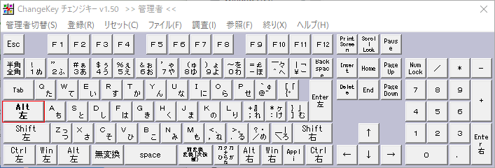
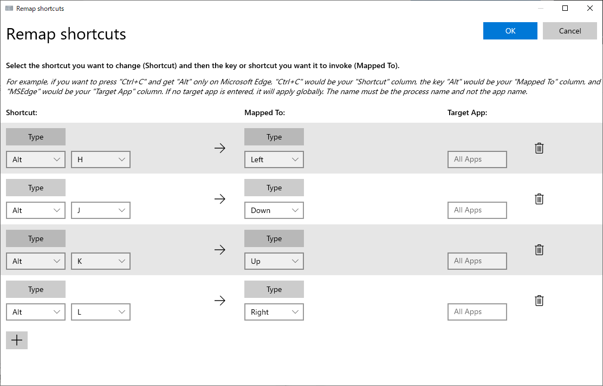

会社のエンジニアの方に下記記事を教えてもらい、個人的に「これは革命だな」と思ったので早速矢印キーを撲滅する設定をしてみました。
[Windows 10] 矢印キーに指を伸ばすエンジニアはザコ！とバカにされた（Change KeyとAutoHotkeyの導入） - Qiita
私の場合は、ChangeKeyとPowerToys(Keyboard Manager)を使って設定を行いました。
ChangeKey + PowerToys(Keyboard Manager)を使って矢印キーを撲滅する設定
最終的なキー割り当て
今回は、CapsLockキーにAltキーを割り当て、Altキーを軸にhjklを押すことで矢印キーと同じ挙動にしました。
hjklはVimでの基本的な移動コマンドのため、かなり直感的で使いやすい操作方法になりました。
| キー | 実行されるキー |
|---|---|
| Alt + h | ← |
| Alt + j | ↓ |
| Alt + k | ↑ |
| Alt + l | → |
1. ChangeKeyを使ってキーの割り当てを行う
キー割り当て自体はPowerToys(Keyboard Manager)でも行うことができるのですが、
キー再マップでCapsLockキーをAltキーに割り当てると不具合で押しっぱなしになるためChange Keyを使用しています。
(不具合が解消されたらPowerToys(Keyboard Manager)のみで実現できるのですが、残念です…)
まず、Change Keyをインストールします。
LZHファイルがダウンロードされるので展開するために7zipで解凍します。
「Change Key」非常駐型でフリーのキー配置変更ソフト - 窓の杜
- ChangeKeyを管理者として実行します。
- Caps LockキーにAltキーを割り当てて保存します(設定を反映させるためにPCの再起動が必要です)。

2. PowerToys(Keyboard Manager)を使って、ショートカットの再マップを行う
MicrosoftがPowerToysという便利ツールを提供しているのでインストールします。
今回はその中でもKeyboard Managerを使いますが、他の機能もとても便利なのでぜひ有効活用してください。
Microsoft PowerToys | Microsoft Docs
- Keyboard Managerを開き、ショートカットキーの再マップを行います。
- 下記画像を参考に割り当てを行います。

まとめ
Vimを使っていますが、なんだかんだ矢印キーを使うことが多くてキーボードを選ぶ際に矢印キーがあるものを選択肢としていましたが、この設定を入れれば矢印キーがないキーボードも選択肢に入れられますし、Vimのノーマルモード時やターミナルでの移動が便利になったので個人的には革命でした！